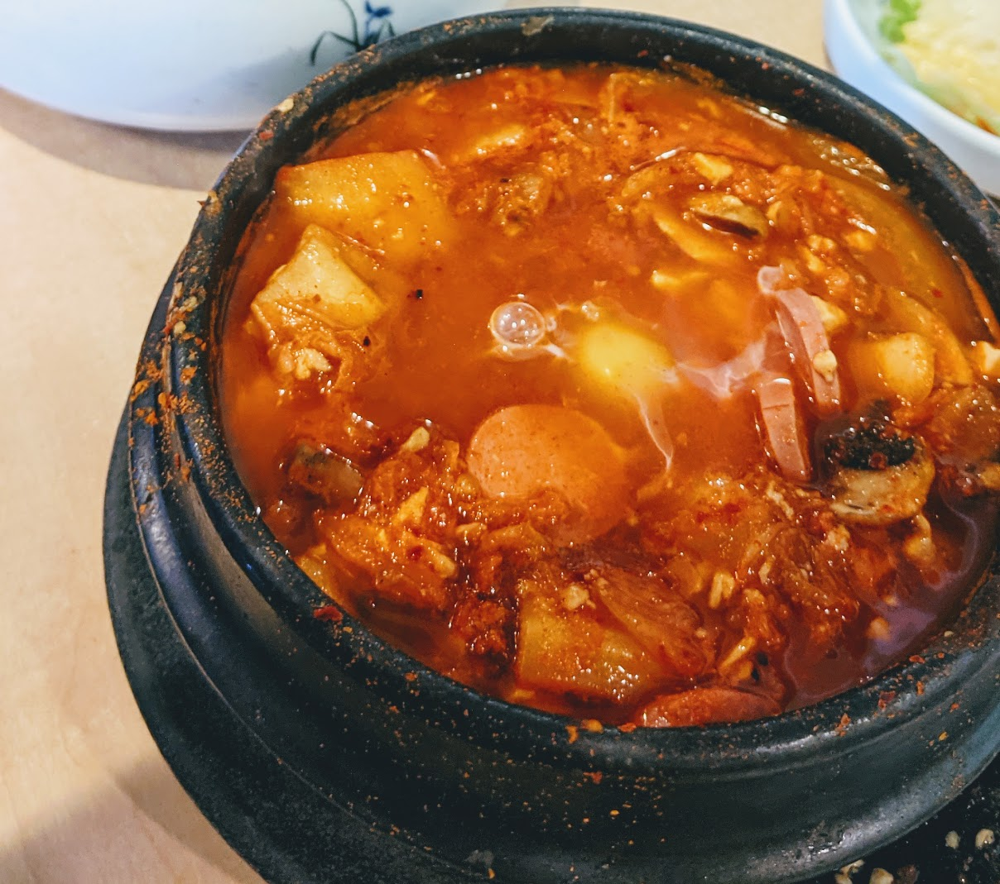

Soondubu (Korean Soft Tofu Stew) Recipe
A warm spicy soup to have during a cold winter night that is traditionally served in an earthenware pot. This recipe is created from the full start to finish of the stew.By: Narissa Nguyen
Ingredients Needed
Stock
- 8 cups of water.
- 2 pouches of premade stock consisting of dried mushrooms, dried anchovies that have their head and guts taken out, and dried kelp.
- 4 ounces of Asian radish, peeled, washed, and sliced thinly.
- Optional: 1 teaspoon of fish sauce to add more of an umami taste.
Stew Paste
- 5 tablespoons of Korean hot pepper flakes. This can also be adjusted to your own liking.
- 2 teaspoon of toasted sesame oil.
Stew
- 2 teaspoon of vegetable oil.
- *4 ounces of cubed pieces of beef.
- 1/2 cup of chopped onions.
- 3 cloves of minced garlic.
- 1 cup of fermented kimchi, chopped roughly into bite sized pieces.
- 2 teaspoon kosher salt.
- 2 tubes of soft tofu.
*The meat can be substituted for anything like sliced pork belly, sliced bacon, hot dog slices, spam, or even skirt steak chunks. Meat can also just not be included.
Garnish that is optional.
- 1 egg.
- 1 green onion, chopped.
Directions
Start off with the stock, move to the paste before starting the stew.
Stock
- Heat up the 8 cups of water on the stove with the 2 premade stock pouches, radish, and fish sauce. Allow this to come up boil on medium to high heat with the lid on.
- Once at a boil turn the heat down to low and allow to simmer for 20 minutes with the lid off.
- When the 20 minutes are up remove the stock pouches and *radish and leave the lid on to keep in the heat.
*You can also keep the radish to add in later to the stew if desired.
Stew Paste
- In a bowl combine the pepper flakes and sesame oil together then put to the side.
Stew
- Heat up the vegetable oil within a pot.
- Once the oil is hot cook your onions and garlic till onions are transparent and garlic is fragrant then cook your beef.
- Cook beef till no longer pink and has some color.
- Add in your chopped kimchi once the meat is mostly cooked, cook down for a minute or two then add in most of your stock and allow to cook for 10 minutes with a lid on and medium to low heat.
- Uncover and stir in the stew paste to your desired spice, but leave some to garnish at the end if you want.
- Put the soft tofu into the stew, allow it to warm up, and break with a wooden spoon into small chunks.
- Taste the stew and if needed add in some of the remaining stock till desired taste.
- If desired crack in one egg, wait until the white of the egg is fully cooked.
- Serve in a bowl, garnish with the green onions, and any leftover stew paste if desired.